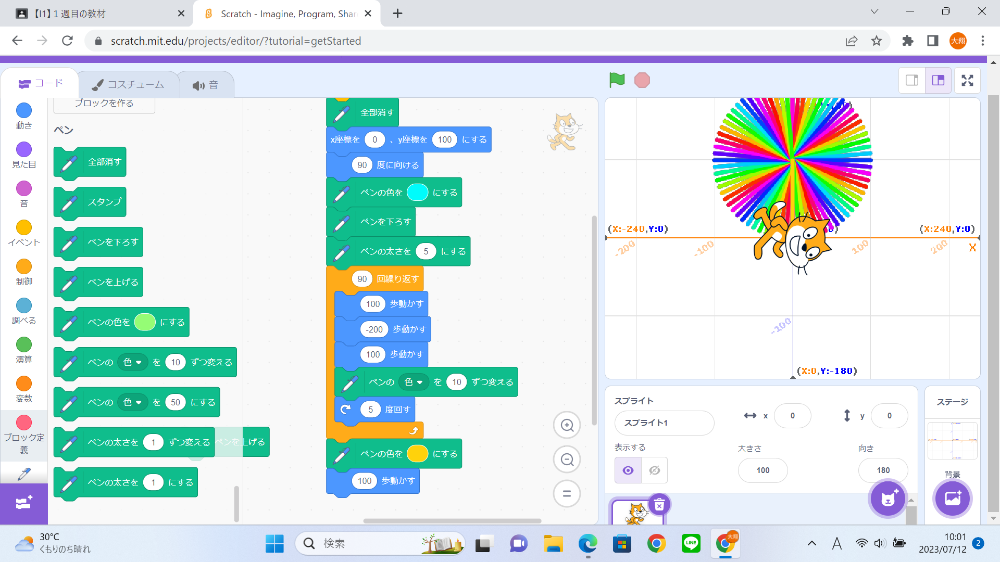
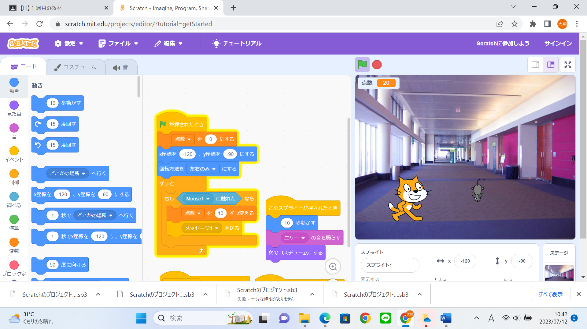

1週目のレポート ： 公大高専１年実習I-1
1a班11番 たわし
第1週目
1-1 サイエンスアート

1.内容
スクラッチを使って線を書くプログラムを作成した。
2.感想
E1でもプログラムを作成したのでサクッと行けたこともあるが プログラムが思ったように動かないこともあったので少し苦戦した。
1-2 ゲーム

1.内容
落ちてくるネズミを捕まえるゲームを作成した。ブロックを組み立てて猫とネズミそれぞれのプログラムを作成した
2.感想
結構複雑なプログラムで特にネズミと猫、それぞれに違うプログラムを作成しなければならなかったことが難しかった。 背景や落ちてくるものを工夫したりするのが楽しった。 また、ネズミが動くスピードや得点を自分自身で変えられてたのですごくおもしろかった。 障害物を作成したりしたら、もっと面白くなるだろうと思った。
1-3 ホームページ作成
私のホームページ
1.内容
自分のホームページを作成した
2.感想
ホームページなんて作ったことがなかったけど、実際簡易的なものは、誰でも作ることができることが分かった。 今はまだもともとあるものを自分用にアレンジしているかんじだけど、自分一人で一から作れるようになりたいと思った。